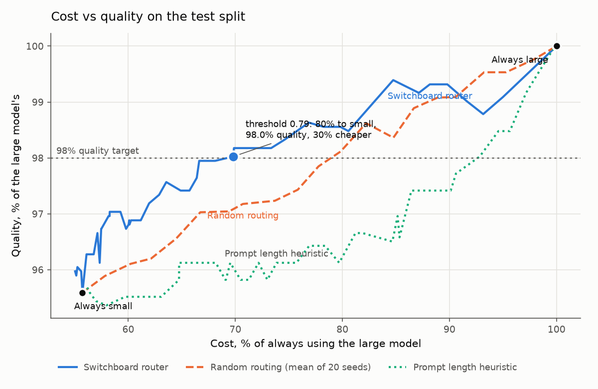

Switchboard
A learned LLM router. A small classifier reads a prompt and predicts whether a cheap small model's answer will be good enough, or the request needs the large model. The classifier runs in your browser; this page calls no LLM.
Loading the router (about 300 MB, cached after the first visit)…
